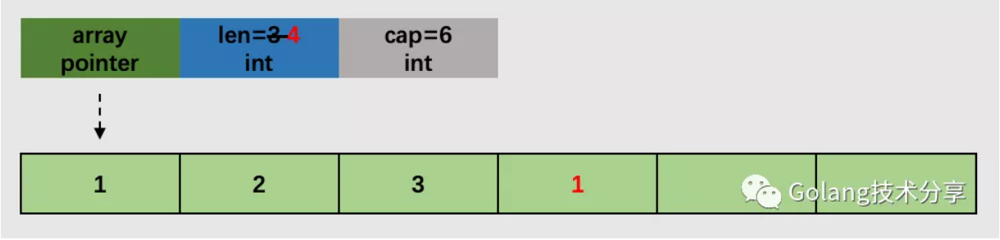
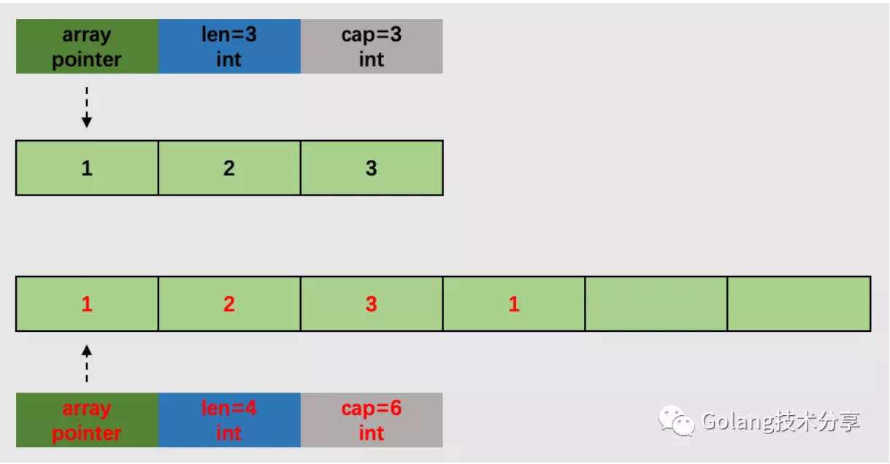
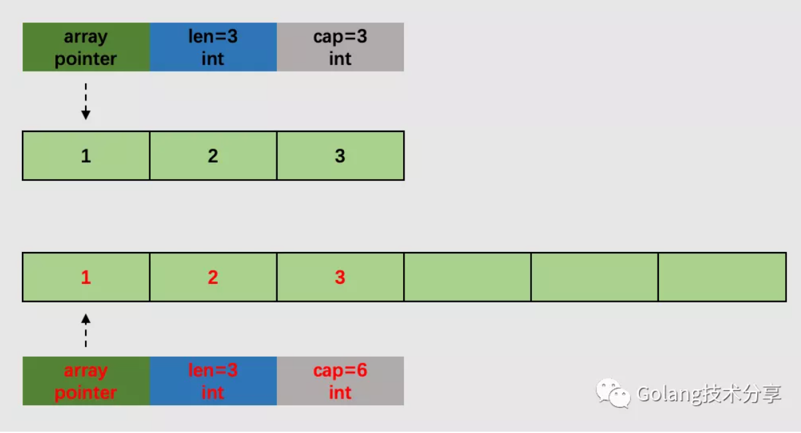

append扩容机制
在《切片传递的隐藏危机》一文，小菜刀有简单地提及到切片扩容的问题。在读者讨论群，有人举了以下例子，并想得到一个合理的回答。
1 | 1package main |
为什么结果不是5，不是8，而是6呢？由于小菜刀在该文中关于扩容的描述不够准确，让读者产生了疑惑。因此本文想借此机会细致分析一下append函数及其背后的扩容机制。
我们知道，append是一种用户在使用时，并不需要引入相关包而可直接调用的函数。它是内置函数，其定义位于源码包 builtin 的builtin.go。
1 | 1// The append built-in function appends elements to the end of a slice. If |
append 会追加一个或多个数据至 slice 中，这些数据会存储至 slice 的底层数组。其中，底层数组长度是固定的，如果数组的剩余空间足以容纳追加的数据，则可以正常地将数据存入该数组。一旦追加数据后总长度超过原数组长度，原数组就无法满足存储追加数据的要求。此时会怎么处理呢？
同时我们发现，该文件中仅仅定义了函数签名，并没有包含函数实现的任何代码。这里我们不免好奇，append究竟是如何实现的呢？
编译过程
为了回答上述问题，我们不妨从编译入手。Go编译可分为四个阶段：词法与语法分析、类型检查与抽象语法树（AST）转换、中间代码生成和生成最后的机器码。
我们主要需要关注的是第二和第三阶段的代码，分别是位于src/cmd/compile/internal/gc/typecheck.go下的类型检查逻辑
1 | 1func typecheck1(n *Node, top int) (res *Node) { |
位于src/cmd/compile/internal/gc/walk.go下的抽象语法树转换逻辑
1 | 1func walkexpr(n *Node, init *Nodes) *Node { |
和位于src/cmd/compile/internal/gc/ssa.go下的中间代码生成逻辑
1 | 1// append converts an OAPPEND node to SSA. |
其中，中间代码生成阶段的state.append方法，是我们重点关注的地方。入参 inplace 代表返回值是否覆盖原变量。如果为false，展开逻辑如下（注意：以下代码只是为了方便理解的伪代码，并不是 state.append 中实际的代码）。同时，小菜刀注意到如果写成 append(s, e1, e2, e3) 不带接收者的形式，并不能通过编译，所以暂未明白它的场景在哪。
1 | 1 // If inplace is false, process as expression "append(s, e1, e2, e3)": |
如果是true，例如 slice = append(slice, 1, 2, 3) 语句，那么返回值会覆盖原变量。展开方式逻辑如下
1 | 1 // If inplace is true, process as statement "s = append(s, e1, e2, e3)": |
不管 inpalce 是否为true，我们均会获取切片的数组指针、大小和容量，如果在追加元素后，切片新的大小大于原始容量，就会调用 runtime.growslice 对切片进行扩容，并将新的元素依次加入切片。
因此，通过append向元素类型为 int 的切片（已包含元素 1，2，3）追加元素 1， slice=append(slice,1)可分为两种情况。

情况1，切片的底层数组还有可容纳追加元素的空间。

情况2，切片的底层数组已无可容纳追加元素的空间，需调用扩容函数，进行扩容。
扩容函数
前面我们提到，追加操作时，当切片底层数组的剩余空间不足以容纳追加的元素，就会调用 growslice，其调用的入参 cap 为追加元素后切片的总长度。
growslice 的代码较长，我们可以根据逻辑分为三个部分。
- 初步确定切片容量
1 | 1func growslice(et *_type, old slice, cap int) slice { |
在该环节中，如果需要的容量 cap 超过原切片容量的两倍 doublecap，会直接使用需要的容量作为新容量newcap。否则，当原切片长度小于1024时，新切片的容量会直接翻倍。而当原切片的容量大于等于1024时，会反复地增加25%，直到新容量超过所需要的容量。
- 计算容量所需内存大小
1 | 1 var overflow bool |
在该环节，通过判断切片元素的字节大小是否为1，系统指针大小（32位为4，64位为8）或2的倍数，进入相应所需内存大小的计算逻辑。
这里需要注意的是 roundupsize 函数，它根据输入期望大小 size ，返回 mallocgc 实际将分配的内存块的大小。
1 | 1func roundupsize(size uintptr) uintptr { |
根据内存分配中的大小对象原则，如果期望分配内存非大对象 ( <_MaxSmallSize )，即小于32k，则需要根据 divRoundUp 函数将待申请的内存向上取整，取整时会使用 class_to_size 以及 size_to_class8 和 size_to_class128 数组。这些数组方便于内存分配器进行分配，以提高分配效率并减少内存碎片。
1 | 1// _NumSizeClasses = 67 代表67种特定大小的对象类型 |
当期望分配内存为大对象时，会通过 alignUp 将该 size 的大小向上取值为虚拟页大小（_PageSize）的倍数。
- 内存分配
1 | 1 if overflow || capmem > maxAlloc { |
如果在第二个环节中，造成了溢出或者期望分配的内存超过最大分配限制，会引起 panic。
mallocgc 分配一个大小为前面计算得到的 capmem 对象。如果是小对象，则直接从当前G所在P的缓存空闲列表中分配；如果是大对象，则从堆上进行分配。同时，如果切片中的元素不是指针类型，那么会调用 memclrNoHeapPointers将超出切片当前长度的位置清空；如果是元素是指针类型，且原有切片元素个数不为0 并可以打开写屏障时，需要调用 bulkBarrierPreWriteSrcOnly 将旧切片指针标记隐藏，在新切片中保存为nil指针。
在最后使用memmove将原数组内存中的内容拷贝到新申请的内存中，并将新的内存指向指针p 和旧的长度值，新的容量值赋值给新的 slice 并返回。
注意，在 growslice 完成后，只是把旧有数据拷贝到了新的内存中去，且计算得到新的 slice 容量大小，并没有完成最终追加数据的操作。如果 slice 当前 len =3，cap=3，slice=append(slice,1)，那它完成的工作如下图所示。

growslice之后，此时新的slice已经拷贝了旧的slice数据，并且其底层数组有充足的剩余空间追加数据。后续只需拷贝追加数据至剩余空间，并修改 len 值即可，这一部分就不再深究了。
总结
这里回到文章开头中的例子
1 | 1package main |
由于初始 s 的容量是2，现需要追加3个元素，所以通过 append 一定会触发扩容，并调用 growslice 函数，此时他的入参 cap 大小为2+3=5。通过翻倍原有容量得到 doublecap = 2+2，doublecap 小于 cap 值，所以在第一阶段计算出的期望容量值 newcap=5。在第二阶段中，元素类型大小 int 和 sys.PtrSize 相等，通过 roundupsize 向上取整内存的大小到 capmem = 48 字节，所以新切片的容量newcap 为 48 / 8 = 6 ，成功解释！
在切片 append 操作时，如果底层数组已无可容纳追加元素的空间，则需扩容。扩容并不是在原有底层数组的基础上增加内存空间，而是新分配一块内存空间作为切片的底层数组，并将原有数据和追加数据拷贝至新的内存空间中。
在扩容的容量确定上，相对比较复杂，它与CPU位数、元素大小、是否包含指针、追加个数等都有关系。当我们看完扩容源码逻辑后，发现去纠结它的扩容确切值并没什么必要。
在实际使用中，如果能够确定切片的容量范围，比较合适的做法是：切片初始化时就分配足够的容量空间，在append追加操作时，就不用再考虑扩容带来的性能损耗问题。
1 | 1func BenchmarkAppendFixCap(b *testing.B) { |
它们的压测结果如下，孰优孰劣，一目了然。
1 | 1 $ go test -bench=. -benchmem |